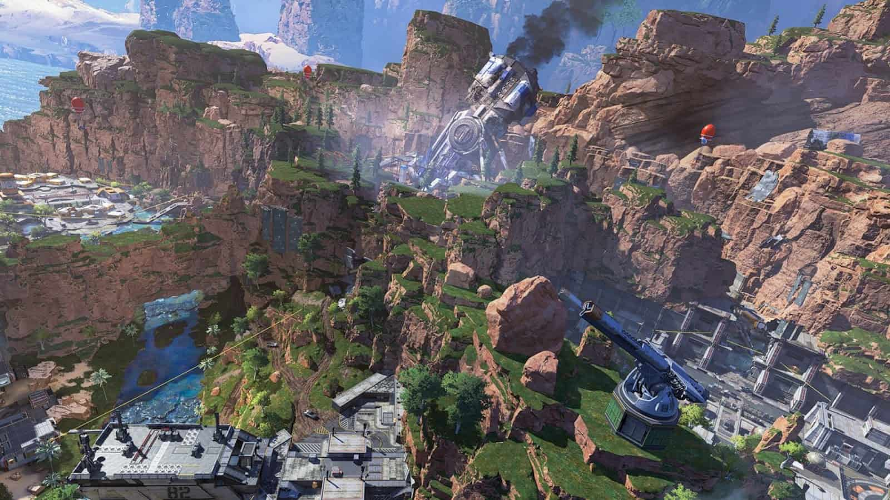
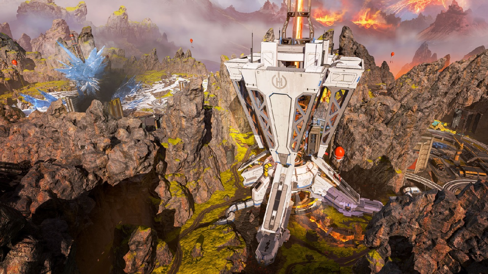
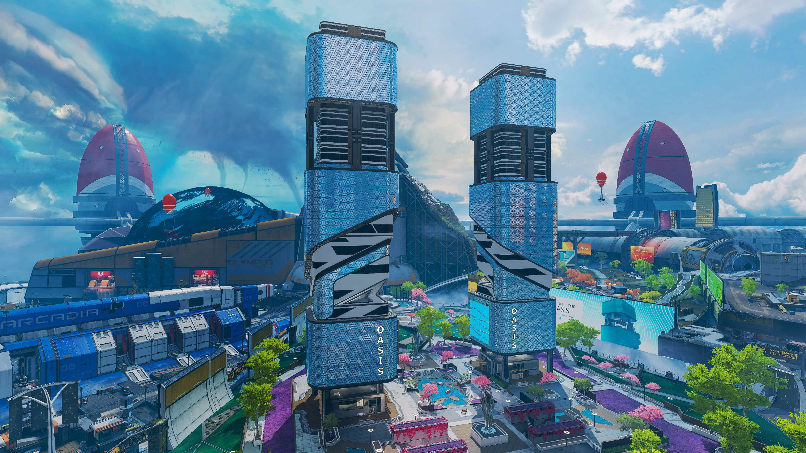
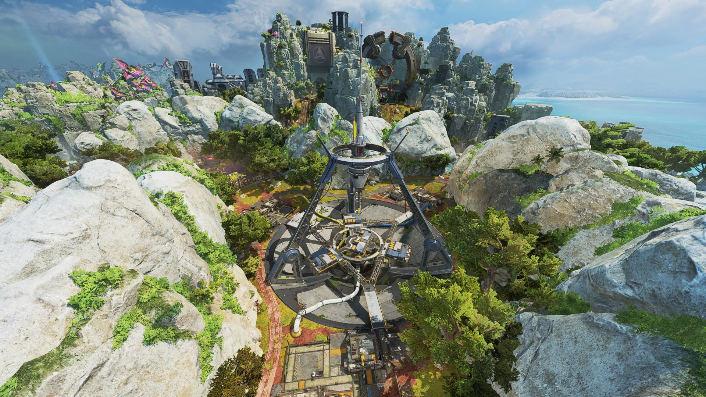
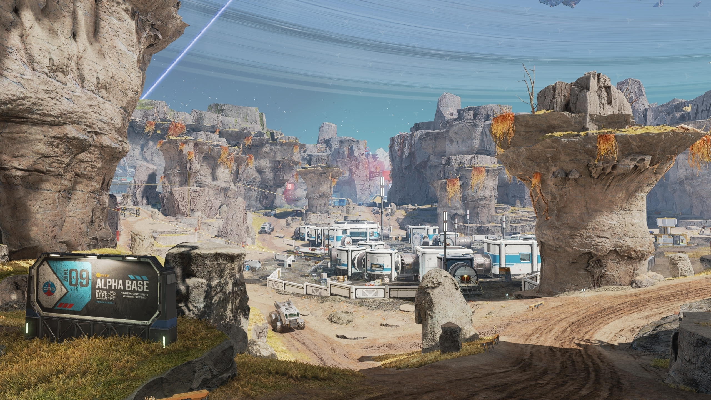
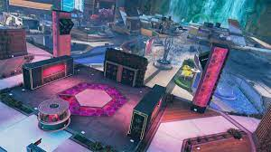
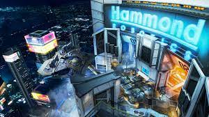
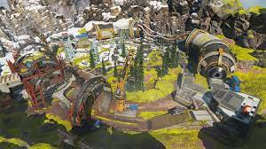
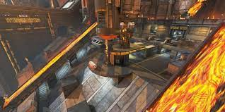

BATTLE ROYALE MAPS
KINGS CANYON
kings canyon is the first map ever on apex. It is a rocky canyon with many beautiful features like waterfalls, green grass texture mix with desert rock texture. It has a flying ship going around the map for players to collect loot.
It also iconic for one of its point of interest ; SKULL TOWN and every other POI it provides for players to discover
WORLDS EDGE
worlds edge is a volcanic theme map that provides incredible features like LAVA , broken cities and snow in half the map. It is has many city like points of interest like; SKYHOOK, fragment EAST AND WEST.
OLYMPUS
OLYMPUS is a futurist themed map. It has a clean look and feels none choatic like the other maps. Everything you see here is all artificial design. Though it does has a black hole in part of map (dont worry you wont die....).
OH YEA.... if you havent notice the map is floating in the sky from the actual world!!!!
STORM POINT
LIKE GETTING LOST IN THE JUNGLE? well storm point is just the place to be, with its jungle like area's.This map is set on a island with a beacon at the north end of the map generating the ongoing storm just not far.
This map has a beatiful beach for its points of interest for you to explore, but be aware theres more that lies within those beaches!!!
BROKEN MOON
WELCOME TO BROKEN MOON!! This map has been the most recent they have release. Though it is really big and having weird rock structures, but i guess thats how a broken moon is.
floating adrift as a moon that has been exploded. you better watch youre back from non stop third parties and oh yes.... falling off the map.
ARENA & TEAM DEATHMATCH MAPS
PARTY CRASHER
ALL OUT FUN WARZONE. WHERE PLAYERS ARE ENGAGED ON CRASH SITE OF PARTY SHIP!!1
BEWARE THERE IS MORE TO IT then having drinks and fun. you better watch your back.
HAMMOND LABS
these are labs were the craziest things are made in the game. more happens here then just the science!!..... there secrets that are barried here.
PHASE RUNNER
not to far from worlds edge but still close. this is area of combat where fighters can use the phase tunnels to get around and elimate eachother.
careful not to throw up because the phase isnt that impressive but is pretty fun
OVERFLOW
probably the best arena map. the laval and technical structure of the map just makes it perfect
careful not to fall off or get burnt by the extremely hot laval flowing around.
ENCORE

one of the recent mini arena or tdm maps added to the game.
this place is home to all the hardcore battles that take place.